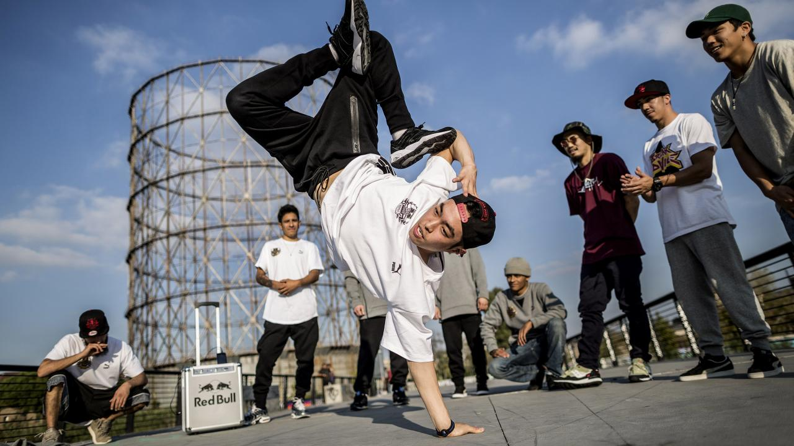
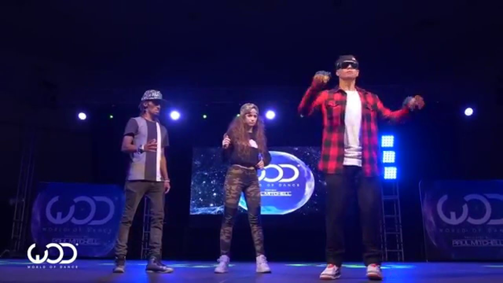
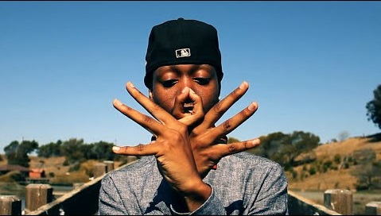
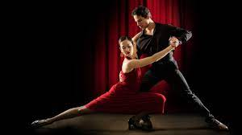

Hip hop dance is a range of street dance styles primarily performed to hip hop music or that have evolved as part of hip hop culture. It is influenced by a wide range of styles that were created in the 1970s and made popular by dance crews in the United States. The television show Soul Train and the 1980s films Breakin', Beat Street, and Wild Style showcased these crews and dance styles in their early stages; therefore, giving hip-hop dance mainstream exposure.
The dance industry responded with a commercial, studio-based version of hip-hop—sometimes called "new style"—and a hip-hop influenced style of jazz dance called "jazz-funk". Classically trained dancers developed these studio styles in order to create choreography from the hip-hop dances that were performed on the street. Because of this development, hip-hop dance is practiced in both dance studios and outdoor spaces.
The commercialization of hip-hop dance continued into the 1990s and 2000s with the production of several television shows and movies such as The Grind, Planet B-Boy, Rize, StreetDance 3D, America's Best Dance Crew, Saigon Electric, the Step Up film series, and The LXD, a web series. Though the dance is established in entertainment, including mild representation in theater, it maintains a strong presence in urban neighborhoods which has led to the creation of street dance derivatives Memphis jookin, turfing, jerkin', and krump. What distinguishes hip-hop from other forms of dance is that it is often "freestyle" (improvisational) in nature and hip-hop dance crews often engage in freestyle dance competitions—colloquially referred to as "battles".
For more Information..Click Here...

The robot became popular in the 1960s, but goes back to the 1920s, when it was used theatrically in miming. It is a dance in which the dancer moves their limbs in a way that imitates the movements of a robot. Movements of the robot are normally started and finished with a dimestop (a very abrupt stop), to give the impression of motors starting and stopping, but poppers have also been known to do the robot with a pop to the beat. As long as the illusion of being a robot is maintained, it is considered the robot.[citation needed]
Robot dancing is often considered a subsection of popping because poppers often include the robot in their routines, sometimes adding pops to the beat while maintaining the illusion of a robot.
However, the robot also exists as its own dance and is sometimes considered a performance rather than a dance when the performer is imitating a robot without any music. When done without music, it is considered to be mime, instead of dance. Street theater often featured mimes who did a mechanical man or puppet style illusion, without music. In the late 1960s, the style was used while social dancing to funk or soul music. While not the first to imitate a robot as a mime, Charles "Robot" Washington[2] and his partner "Robot Ann" were the first to socially couple dance the style to music at parties and clubs. It was at this point it became a party dance and later combined with other illusion styles to form today's popping style. It is commonly known as "Robotics". Roboting has also been likened to the jazz-era folk dance of puppeting (a style also appreciated in some colors of experimental ballet), whereby the dancer would emulate the mechanical movements of a simple musical box doll.
For more Information..Click Here...

Finger-tutting is a type of dance that involves intricate movements of the fingers.[1][2] The word "tutting" is a street dance style based on angular movements which are supposed to stylize the poses seen on reliefs in the art of ancient Egypt, and refers to "King Tut".[3]
Popularity of this dance style increased after Jay Gutierrez or "Jsmooth" revealed his innovated style of finger-tutting in the credits of Step Up 3D, released August 6, 2010.[4][5]
Finger-tutting received international attention after dancer/choreographer Julian "JayFunk" Daniels performed in a viral Samsung commercial entitled "Unleash Your Fingers".[6] Later, the dance group Finger Circus popularized the form through commercials[7] and YouTube videos.
Finger-tutting received further international attention after practitioner John Hunt, also known as Pnut, made a viral video entitled "Greasy Fingers".[1] Filmed, directed and produced by Statussilver. Later, Hunt was featured prominently in the video for the Taylor Swift song "Shake It Off".
For more Information..Click Here...

Salsa is a Latin dance associated with the music genre of the same name which was first popularized in the United States in the 1960s in New York City.[1][2] Salsa is an amalgamation of Cuban dances, such as mambo, pachanga, and rumba as well as American dances, such as swing and tap.
It was primarily developed by Puerto Ricans and Cubans living in New York in the late 1960s and early 1970s.[3] Different regions of Latin America and the United States (including countries in the Caribbean) have distinct salsa styles of their own, such as Cuban, Puerto Rican, Colombian, and New York styles. Salsa dance socials are commonly held in nightclubs, bars, ballrooms, restaurants, and outside, especially when part of an outdoor festival.
Salsa's tempo ranges from about 150 bpm (beats per minute) to around 250 bpm, although most dancing is done to music somewhere between 160 and 220 bpm.[4] The basic Salsa dance rhythm consists of taking three steps for every four beats of music. The odd number of steps creates the syncopation inherent to salsa dancing and ensures that it takes eight beats of music to loop back to a new sequence of steps.
For more Information..Click Here...

Belly dance (Egyptian Arabic: رقص بلدى, translated: Dance of the Country/Folk Dance, romanized: Raks/Raas Baladi) is a dance that has its origins in Egypt.[1][2] It features movements of the hips and torso.[3] It has evolved to take many different forms depending on the country and region, both in costume and dance style; with the Egyptian styles and costumes being the most recognized worldwide due to Egyptian cinema. The Egyptian style with its traditional Egyptian rhymes is popular worldwide with many schools around the globe now practicing it.
For more Information..Click Here...